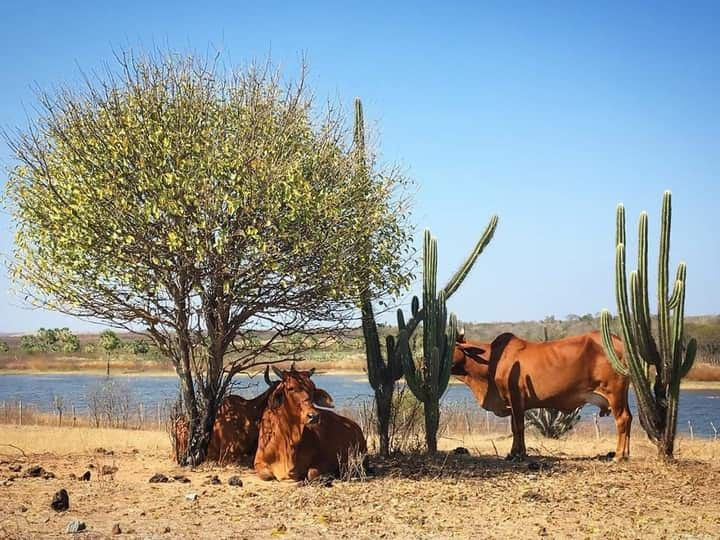
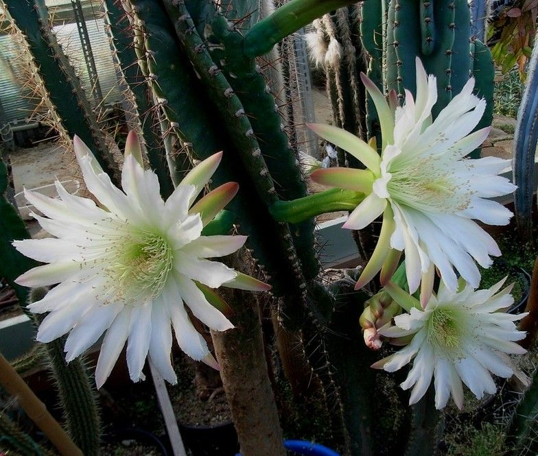
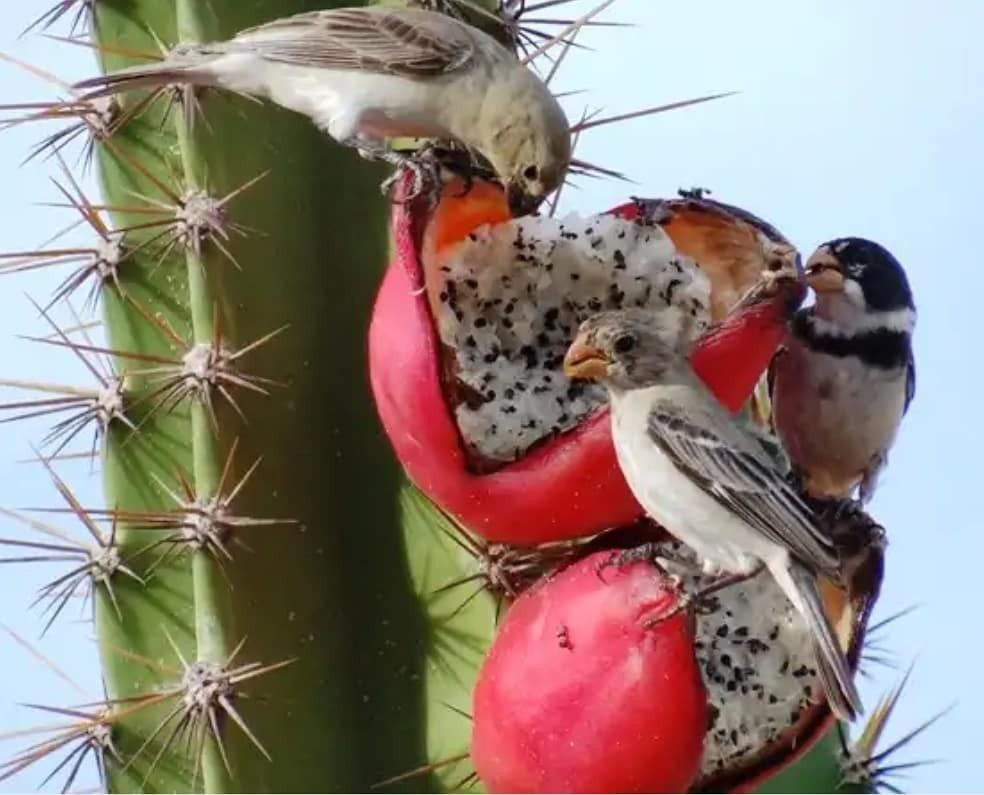
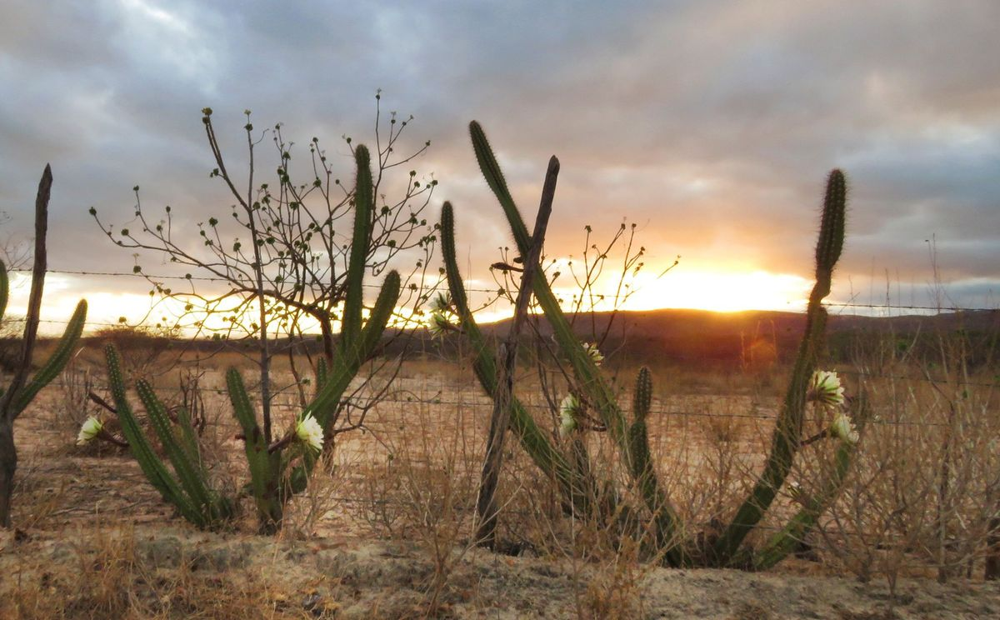
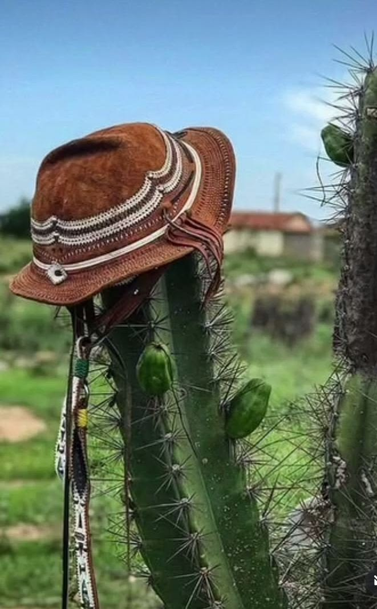

A IMPORTÂNCIA DO MANDACARU
O mandacaru é uma planta de grande importância para o ambiente e para as populações que vivem em regiões semiáridas. Além de fazer parte da paisagem da Caatinga, ele contribui para a alimentação dos animais, para a biodiversidade e para a sobrevivência de diferentes espécies.
Importância ecológica
O mandacaru desempenha um papel importante no equilíbrio dos ecossistemas onde está presente. Suas flores e frutos servem de alimento para diferentes animais, enquanto sua estrutura também pode oferecer abrigo e proteção para pequenos organismos.


Flores e biodiversidade
As flores do mandacaru são importantes fontes de alimento para animais, principalmente durante períodos em que há menor disponibilidade de recursos na natureza. Suas flores também participam do processo de polinização, contribuindo para a reprodução da planta.
Alimentação dos animais
Durante os períodos mais secos, o mandacaru pode se tornar uma importante fonte de alimento para animais. Seus frutos podem ser consumidos por diversas espécies, e a planta também pode ser utilizada na alimentação de animais criados pelas comunidades locais.


Importância para a Caatinga
O mandacaru é uma das plantas que representam a resistência da Caatinga. Sua capacidade de armazenar água e sobreviver em períodos de seca demonstra como as plantas desse bioma são adaptadas às condições de pouca água e altas temperaturas.
Importância para as comunidades
O mandacaru também possui importância cultural e econômica para as populações do Nordeste. Seus frutos podem ser aproveitados na alimentação, enquanto a planta pode ter diferentes usos relacionados à vida no campo.

Uma planta de grande valor
Mais do que uma planta adaptada à seca, o mandacaru faz parte do equilíbrio ambiental e da cultura das regiões onde ocorre. Preservá-lo significa também proteger a biodiversidade e os conhecimentos relacionados à Caatinga.